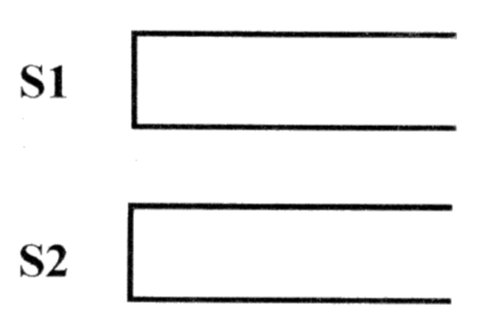
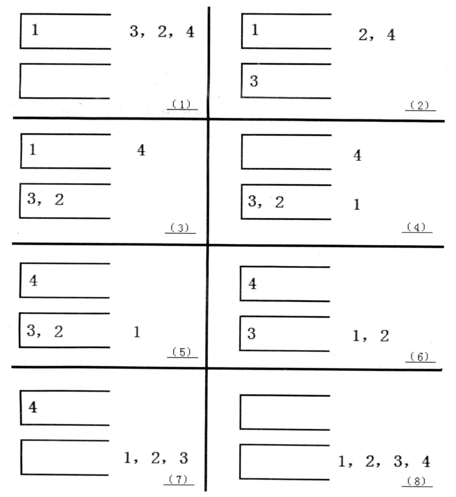

Tom 最近在研究一个有趣的排序问题。如图所示，通过 2 个栈 S1 和 S2，Tom 希望借助以下 4 种操作实现将输入序列升序排序。

操作 a：如果输入序列不为空，将第一个元素压入栈 S1
操作 b：如果栈 S1 不为空，将 S1 栈顶元素弹出至输出序列
操作 c：如果输入序列不为空，将第一个元素压入栈 S2
操作 d：如果栈 S2 不为空，将 S2 栈顶元素弹出至输出序列
如果一个 $1$ ~ $n$ 的排列 $P$ 可以通过一系列操作使得输出序列为 $1，2，…，(n-1)，n$，Tom就称 $P$ 是一个“可双栈排序排列”。例如 $(1,3,2,4)$ 就是一个“可双栈排序序列”，而 $(2,3,4,1)$ 不是。下图描述了一个将 $(1,3,2,4)$ 排序的操作序列：<a,c,c,b,a,d,d,b>

当然，这样的操作序列有可能有几个，对于上例 $(1,3,2,4)$，<a,c,c,b,a,d,d,b> 是另外一个可行的操作序列。Tom 希望知道其中字典序最小的操作序列是什么。
 Comet OJ
Comet OJ